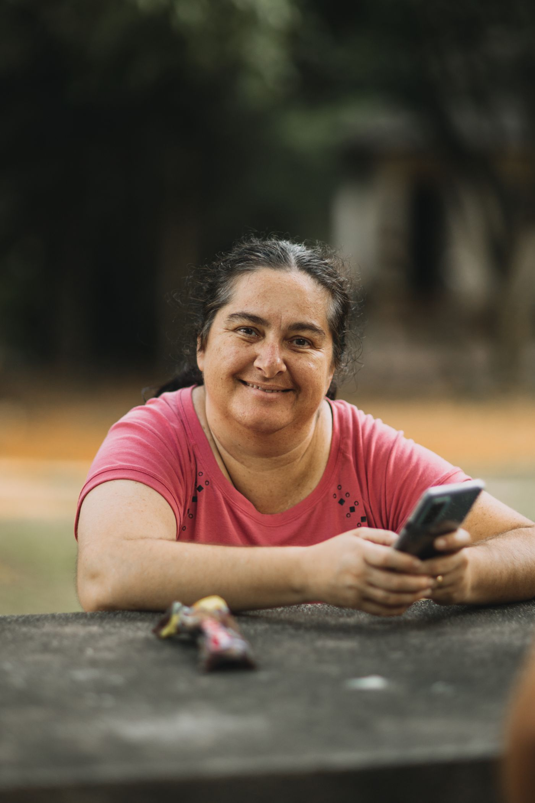
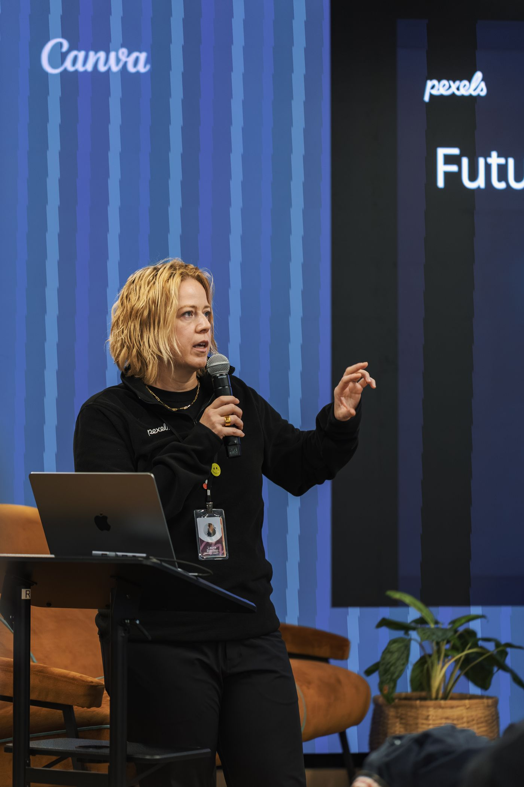
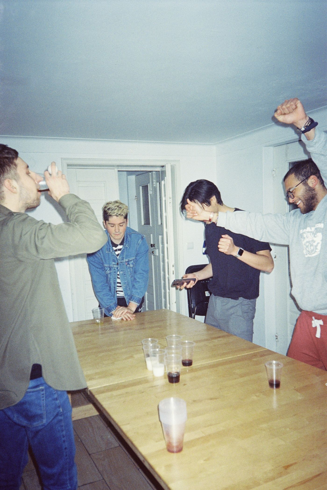
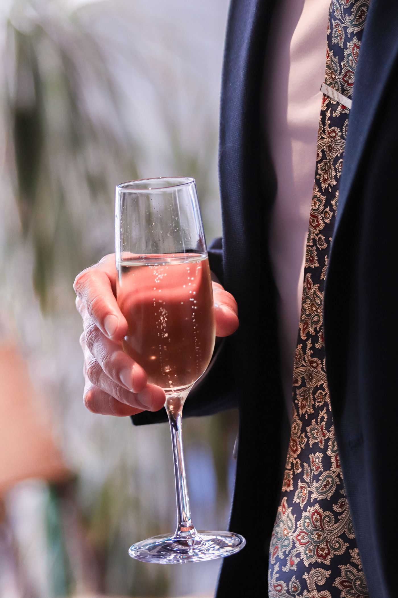
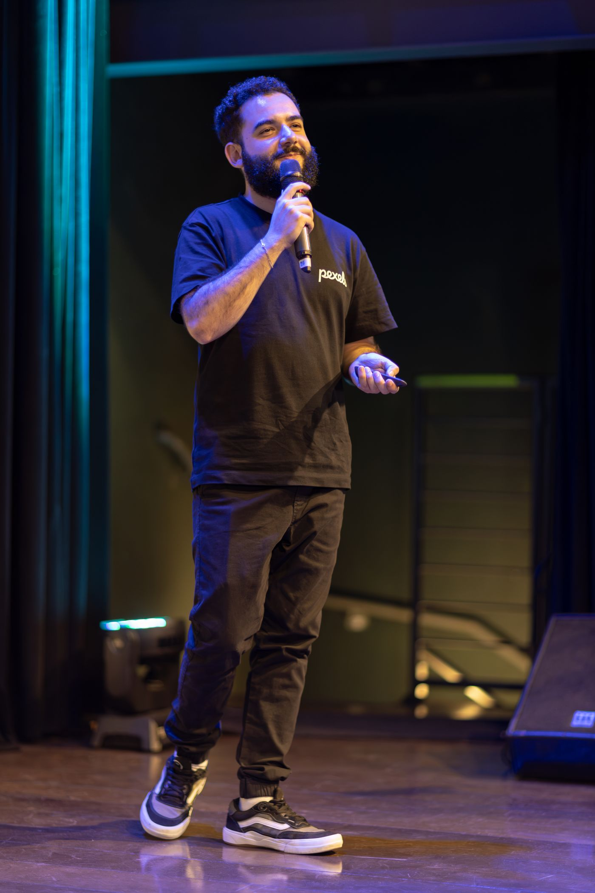

Rivediti.
Proposta di brand identity e redesign per Frames of Me — l'app che a un evento ti ritrova tra migliaia di scatti partendo da un selfie. Un sistema caldo, chiaro e preciso: la foto è la protagonista, l'interfaccia è solo la cornice.
framesofme.com
Mobile-first
Light only
Italiano









Il momento "Recognition": la cornice si posa, i tuoi scatti tornano a fuoco.
~150kfoto per conferenza
~6.000partecipanti
1selfie per trovarti
0password da ricordare